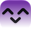

A familiar presence
Suzzme’s existing cloud mascot leads. A short status and progress ring make the work feel personal and easy to follow.

suzzme/design studioINTERACTION STUDY 01 — 03Design notes ↗Three ways for Suzzme to stay with you while your summary comes together.
Made for a glance.
More when you need it.
The references inform the black surfaces, concentrated information, and clear hierarchy. Each direction keeps identity on the left and live status on the right.
Suzzme’s existing cloud mascot leads. A short status and progress ring make the work feel personal and easy to follow.
A quiet editorial treatment. Source counts become a concise briefing, with clear milestones in the expanded view.
A precise segmented indicator tracks the same task. Expanded source rows show what has been gathered and understood.
Compact keeps essential live information on either side of the camera. Minimal shows an identifiable progress indicator when activities share the island. Expanded preserves the layout and reveals useful detail. In iOS, the system selects these presentations.
This browser mockup simulates a user initiated, finite summary session. Production uses ActivityKit and WidgetKit, including a Lock Screen layout. The system owns island geometry and transitions; progress here is illustrative. Content updates use brief, bounded motion, with a reduced motion alternative.